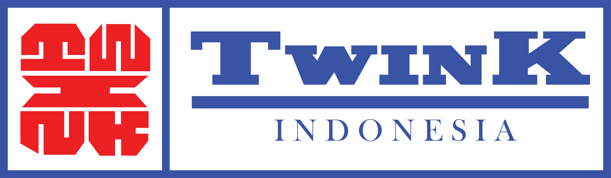
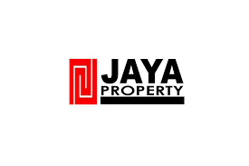
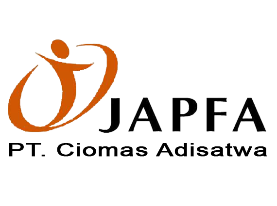

Client



PT. Daffamas Karya Semesta adalah perusahaan yang menyediakan layanan pengeboran sumur berkualitas tinggi untuk memenuhi kebutuhan eksplorasi dan survei dalam industri pertambangan, minyak, dan gas. Dengan menggunakan teknologi terkini dalam proses pengeboran dan analisis data, PT. Oasis Teknik memberikan solusi yang akurat dan efektif dalam mengidentifikasi sumber daya alam bawah tanah, serta mengelola risiko teknis yang mungkin muncul. Dengan tim ahli yang berpengalaman dan fokus pada inovasi, PT. Oasis Teknik menjadi mitra yang dapat diandalkan bagi klien dalam mengembangkan dan mengelola sumur-sumur mereka dengan optimal.
Jasa Sumur Bor Dalam kami menyediakan solusi lengkap untuk kebutuhan air bersih. Tim ahli kami menggunakan peralatan canggih untuk mengebor sumur dalam dengan presisi tinggi, memastikan pasokan air yang stabil dan berkualitas. Layanan kami mencakup pengeboran, instalasi pompa air, serta pemeliharaan dan perbaikan sumur. Dengan komitmen terhadap kualitas dan kepuasan pelanggan, kami siap membantu memenuhi kebutuhan air bersih Anda dengan efisien dan profesional.
Jasa Sumur Bor DalamKami menawarkan solusi lengkap untuk pengurusan Surat Izin Prinsip dan Surat Izin Prinsip Aliran. Dari konsultasi awal hingga penyelesaian, kami memastikan proses perizinan berjalan lancar dan sesuai dengan regulasi yang berlaku. Dengan pendekatan yang efisien dan pengalaman yang teruji, kami memastikan kelancaran proyek Anda dalam memenuhi persyaratan hukum dan administratif.
Perizinan SIPA & SIPKami menyediakan solusi mutakhir untuk pemetaan struktur bawah tanah dengan presisi tinggi. Menggabungkan teknologi geolistrik terkini dan tim ahli berpengalaman, kami memberikan pemahaman mendalam tentang formasi geologi dan sifat material di bawah permukaan. Dengan pendekatan yang teliti dan hasil yang akurat, kami memastikan kontribusi signifikan terhadap kesuksesan proyek eksplorasi dan konstruksi Anda.
Jasa GeolistrikKami menyediakan solusi inovatif dan terbaik untuk inspeksi sumur dan bor dengan menggunakan teknologi kamera terkini. Dengan peralatan canggih dan tim ahli kami, kami memberikan layanan inspeksi yang akurat dan komprehensif untuk memastikan keandalan dan kinerja optimal sumur Anda. Teknologi kamera kami memungkinkan visualisasi yang jelas dan detail dari interior sumur, memungkinkan kami untuk mendeteksi dan menganalisis masalah potensial seperti kerusakan struktural, tumpukan sedimen, atau kebocoran. Dengan pendekatan yang profesional dan terpercaya, kami berkomitmen untuk memberikan solusi inspeksi sumur terbaik yang memenuhi kebutuhan dan harapan Anda.
Jasa Borehole CameraKami menyediakan solusi inovatif dan terbaik untuk Jasa Pumping Test dengan menggunakan teknologi kamera terkini. Dengan peralatan canggih dan tim ahli kami, kami memberikan layanan inspeksi yang akurat dan komprehensif untuk memastikan keandalan dan kinerja optimal sumur Anda. Teknologi kamera kami memungkinkan visualisasi yang jelas dan detail dari interior sumur, memungkinkan kami untuk mendeteksi dan menganalisis masalah potensial seperti kerusakan struktural, tumpukan sedimen, atau kebocoran. Dengan pendekatan yang profesional dan terpercaya, kami berkomitmen untuk memberikan solusi inspeksi sumur terbaik yang memenuhi kebutuhan dan harapan Anda.
Jasa Pumping TestKami menyediakan solusi komprehensif untuk kebutuhan pemetaan dan survei tanah Anda. Dengan penggunaan teknologi canggih dan tim ahli berpengalaman, kami menawarkan peta topografi yang akurat dan detail, serta desain yang tepat sesuai dengan kebutuhan proyek Anda. Dari konsultasi awal hingga penyelesaian, kami memastikan kepuasan klien dengan hasil yang terpercaya dan tepat waktu.
Jasa TopografiKami menyediakan Jasa Borepile & Konstruksi Terbaik dengan pendekatan komprehensif yang dimulai dari konsultasi awal hingga penyelesaian proyek. Tim kami bekerja sama dengan klien untuk merencanakan strategi borepile dan konstruksi yang efisien, menggunakan peralatan dan teknik terbaru untuk mengebor pile secara akurat dan efisien. Kami menjamin konstruksi struktur bangunan atau fondasi dengan bahan berkualitas tinggi dan kerja yang teliti. Selama seluruh proses, kami memantau kemajuan konstruksi untuk memastikan kepatuhan terhadap standar keselamatan dan kualitas. Dengan fokus pada keahlian teknis, manajemen proyek yang cermat, dan komunikasi terbuka, kami memastikan hasil terbaik dalam setiap proyek borepile dan konstruksi.
Jasa Borepile & KonstruksiKami menawarkan solusi terkini untuk evaluasi dan pemantauan integritas sumur bor. Melalui penggunaan teknologi geolistrik terkemuka dan tim ahli terlatih, kami memberikan data yang akurat tentang karakteristik geologis dan hidrologis di sekitar sumur. Dengan pendekatan yang efisien dan hasil yang dapat diandalkan, kami membantu memastikan kesuksesan operasional dan keberlanjutan sumur bor Anda.
Electrical Logging TestKami menyediakan solusi lengkap untuk kebutuhan analisis tanah dan fondasi proyek Anda. Dengan menggunakan pendekatan ilmiah yang canggih dan tim ahli terlatih, kami memberikan evaluasi yang akurat dan rekomendasi yang tepat untuk mengoptimalkan keberhasilan konstruksi Anda. Keunggulan layanan kami meliputi pemeriksaan tanah yang teliti, analisis risiko geoteknikal, dan solusi fondasi yang inovatif. Dengan fokus pada kualitas, keamanan, dan efisiensi, kami bertekad untuk menjadi mitra terpercaya dalam setiap proyek Anda.
Jasa GeoteknikKami menyediakan solusi lengkap untuk evaluasi tanah yang akurat dan reliabel. Menggunakan teknologi canggih dan tim ahli terlatih, kami melakukan sondir boring dengan presisi tinggi untuk mengumpulkan data yang diperlukan tentang karakteristik tanah di lokasi proyek Anda. Dengan fokus pada kualitas, keandalan, dan kepuasan pelanggan, kami bertekad untuk menjadi mitra terpercaya dalam memastikan kesuksesan proyek Anda.
Sondir Boring TestKami berkomitmen untuk memberikan layanan terbaik dan pengalaman kemitraan yang memuaskan setiap langkah perjalanan Anda.